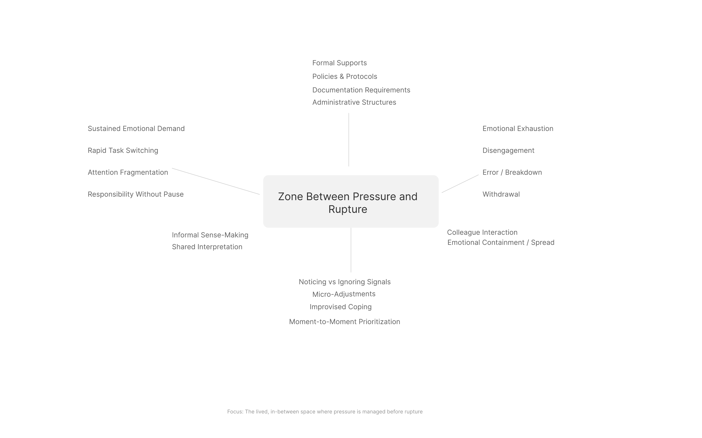

FINAL DESIGN PROJECT PRESENTATION
Designing for the
Liminal Zone
Understanding and supporting the space between pressure and rupture in mental health work.
This project reframes burnout not as a single outcome, but as a process unfolding inside the everyday experience of VA mental health clinicians.
PROBLEM FRAMING
The work is continuous, not discrete.
VA mental health clinicians move through a continuous field of emotionally demanding encounters, administrative obligations, and rapid role transitions. The pressure of the work does not arrive in clean segments. It accumulates across interactions, responsibilities, interruptions, and expectations that remain active even as the clinician moves to the next task.
What appears organizationally as burnout at the end of the process is lived much earlier as an unstable interval in which clinicians are still functioning, adapting, and trying to maintain care. The design problem begins there, before breakdown is visible.
“The problem is not burnout as an endpoint. The problem is the absence of structured support within the interval where strain is building but has not yet ruptured.”
This presentation focuses on that interval.
FIELD OF EXPERIENCE
Clinicians work inside a dynamic and unstable field.
The everyday work experience is structured by unresolved tensions: care and efficiency, responsiveness and documentation, human connection and bureaucratic requirement. These tensions do not disappear; they persist as conditions that shape attention, emotion, and judgment in real time.
Because of this, pressure is not simply caused by one event. It emerges through an evolving field in which clinicians are continuously interpreting what matters, what can wait, and how to remain present while under load.
DEVELOPMENT OF THE IDEA
Burnout is better understood as a process than as a fixed state.
Conventional approaches tend to treat burnout as a measurable condition identified through surveys, indicators, or retrospective reporting. Those approaches are useful, but they privilege what becomes visible after the fact.
This project begins earlier. It focuses on the unfolding process through which strain accumulates in real time, before it hardens into a recognizable organizational outcome.
Shift in framing
From measuring burnout after it appears...
Design opportunity
...to understanding how clinicians experience and manage emerging strain before rupture.
CORE CONCEPT
The liminal zone is the in-between space where pressure is present, but not yet overwhelming.
Zone
In this zone, experience is often pre-reflective. Clinicians may feel strain before they can name it. They notice subtle shifts in focus, patience, emotional responsiveness, or capacity, and often respond through small informal adjustments rather than formal requests for help. This is where intervention is still possible, but where organizational systems rarely see what is happening.
STRUCTURAL GAP
A gap exists between lived experience and formal recognition.
Formal system logic
Policies, documentation requirements, metrics, and institutional supports are built to respond to conditions that can be named, measured, and categorized after they become legible to the organization.
Lived practice logic
Clinicians manage emerging strain through moment-to-moment prioritization, internal self-regulation, behavioral adjustment, and brief interactions with colleagues that rarely enter formal systems at all.
The liminal zone sits inside this disconnect. It is where strain is actively managed in practice while remaining largely invisible to the structures intended to support clinician well-being.
FUNDAMENTAL STRATEGY
Design for process rather than outcome.
Recognition
Support clinicians in noticing subtle shifts in emotional and cognitive strain while they are still inside the flow of work.
Communication
Create ways for emerging strain to become expressible without stigma, formal reporting burden, or workflow disruption.
Response
Enable small, adaptive, context-sensitive adjustments before pressure hardens into exhaustion, disengagement, or error.
These are not rigid stages. They are overlapping processes embedded within the clinician’s day, shaping how experience unfolds before rupture occurs.
CONCEPTUAL MODEL
The design model locates intervention inside the zone between pressure and rupture.
The field of experience contains the ongoing demands of work. Pressure accumulates inside that field, the liminal zone emerges as a transitional condition, and rupture marks the point at which pressure exceeds the clinician’s capacity to manage it effectively.
The model is dynamic rather than linear. Clinicians may move in and out of the liminal zone many times within a single day, which makes early recognition and flexible response more valuable than retrospective measurement alone.

EVALUATION
What makes this an effective design intervention?
The design must remain grounded in lived experience rather than abstract metrics alone. It must be coherent enough to connect emotional, cognitive, relational, and organizational dimensions without reducing them to a single variable.
It must also be feasible inside actual work conditions. If it creates additional administrative burden or depends on ideal circumstances, it will fail the reality of practice.
Relevance
Grounded in the real experience of clinicians rather than only in retrospective outcomes.
Coherence
Connects emotional, cognitive, relational, and organizational dimensions into one frame.
Feasibility
Works through small, embedded interventions rather than requiring structural overhaul.
Impact
Intervenes earlier, where support can still influence how the process unfolds.
BUSINESS / ADOPTION ARGUMENT
Why this matters organizationally.
Burnout carries costs in turnover, absenteeism, disengagement, and reduced continuity of care. Most systems respond after strain has already hardened into visible outcomes. This project shifts attention upstream.
Because the design is oriented toward small-scale, embedded supports, it can begin as a low-risk prototype rather than a full structural overhaul. That makes it easier to test, refine, and adopt within existing conditions of practice.
The economic case is not based on a single product promise. It is based on preventive organizational capability: creating a way to respond to emerging strain before it becomes more costly to both the clinician and the system.
CONCLUSION
Design begins by seeing the zone that existing systems miss.
This inquiry reframes burnout not as a discrete condition, but as a process unfolding within the everyday flow of work. By focusing on the liminal zone between pressure and rupture, it identifies a region of experience where clinicians are still adapting, still functioning, and still open to support.
The contribution of the project is conceptual and practical at once: it defines a neglected design space, and it proposes that meaningful intervention begins not after rupture, but inside the lived interval that comes before it.
Thank you